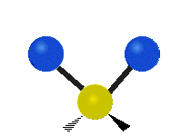
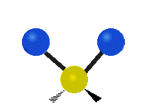

Enthalpy Revisited
It is interesting to note that the empirical correlation for enthalpy shown in Section 2.4 is a function of temperature alone:
This is surprising, especially since in Section 2.1 enthalpy was defined as follows:
Pressure and density both clearly play a role in this equation, which is applicable to both liquids and gasses. The analysis of SSME combustion products in this section will focus on the gaseous state. The ideal gas law can then be re-arranged to reach the following conclusion:
Plugging this expression into Equation 2.1.1 reveals that
The specific gas constant, $R_s$, is the universal gas constant divided by the molecular mass of the gas molecule. This eliminates the explicit pressure and density terms from the expression for enthalpy. But what about the internal energy, $u$, of the gas? Does pressure play a role here?
To answer this question, we need to break down internal energy into four components: translational energy, rotational energy,vibrational energy, and electronic energy.[17]
Translational energy is the result of the molecule moving through space. It is the kinetic energy of the gas molecule, as shown below in Figure 2.5.1.

Figure 2.5.1[18]
The image above depicts two-dimensional motion of a collection of gas molecules. In reality, a gas molecule is free to translate in three dimensions. It has three degrees of geometric freedom. Statistical thermodynamics can be used to show that each of degree of freedom contributes a factor of $\left(1/2\right)R_sT$ to the overall translational energy of the molecule. Summing up these factors for each translational degree of freedom reveals that translational energy is a function of temperature alone:[17] .
We now turn our attention to the rotational energy of a molecule, $e_{rot}$. This kinetic energy due to the molecule spinning about its molecular axis, as shown below in Figure 2.5.2.

Figure 2.5.2[19]
As with translation, the molecule is free to rotate about any of its three spatial axes. It can therefore have up to three rotational degrees of freedom. The exact number of rotational degrees of freedom depends on the geometry of the molecule in question. Monatomic gasses consist simply of a nucleus. There is no defined molecular axis about which they can rotate. Therefore monatomic gasses have no rotational degrees of freedom. A diatomic molecule or linear polyatomic molecule (shown below in Figure 2.5.3) has two rotational degrees of freedom. This is because the moment of inertia along the internuclear axis (X) is negligible compared to the moment of inertia about the two axes perpendicular to it (Y and Z).[17]
Figure 2.5.3[20]
A non-linear molecule such as $H_2O$ has three rotational degrees of freedom:
Figure 2.5.4[21]
We now look at the molecule’s vibrational energy. Many different degrees of vibrational freedom may exist. Several examples are shown below.
 

Figure 2.5.4:Possible Vibration Modes [22]
| Species | Harmonic Frequency $\left(cm^{-1}\right)$ |
|---|---|
| $H_2$ | 4401.2 |
| $O_2$ | 1580.2 |
| $H_2O$ (Mode 1) | 3832.2 |
| $H_2O$ (Mode 2) | 1648.5 |
| $H_2O$ (Mode 3) | 3942.5 |
| $O$ | 0 |
| $H$ | 0 |
Table 2.5.1
These frequencies, $v$, can be used to calculate the overall vibrational energy contained within the gas. The following equation is applicable to a diatomic molecule. Similar equations exist for polyatomic molecules, but analysis becomes increasingly complex as multiple vibrational modes must be accounted for, as in the case of $H_2O$. Vibrational energy can be neglected in monatomic gasses such as $O$ and $H$.[17]
Equation 2.5.5. shows that the vibrational energy of an ideal gas is independent of pressure. It is a function of temperature alone.
Finally, we turn to the electronic energy of the gas. This energy is due to electron configuration within the molecule’s orbitals. As temperature increases, electrons transition from ground state orbitals to enter an “excited state,” which increases the internal energy of the gas.
Figure 2.5.5[24]
Electronic excitation is a complicated process to model. We must turn to an electronic partition function, Q:
The coefficients $g_i$ and $\epsilon_i$ describe electron configuration within the molecule’s orbitals. $g_i$ represents the degeneracy of the configuration. Degeneracy accounts for the possibility of multiple electron orientations within the same quantized energy level. $\epsilon_i$ is the total amount of energy contained within the level of interest. These coefficients are not easy to calculate. They are generally determined by spectroscopic measurement. Refer to [25], [26], and [27].
Fortunately we do not need to perform a summation over an infinite number of electronic energy levels as Equation 2.5.6 seems to suggest. Referring back to Figure 2.5.5, it can be seen that the largest increase in the electronic energy of a gas occurs during transition from the ground state to the first excited state. The amount of energy gained in subsequent transitions lessens with each jump. Generally speaking, this means that the high-order terms Equation 2.5.6 can neglected, especially when modeling relatively low temperatures. Reasonably accurate results can be obtained using the degeneracy and energy coefficients corresponding to the first transition above ground state. For this example we will examine the first ground state transition of diatomic oxygen ($g_0 =3$, $g_1 =2$, and $\epsilon_0=0$, $\epsilon_1=-1.57\times10^{-19})$.
After plugging these coefficients in to Equation 2.5.6 one more step is required to complete the energy calculation:
We are now finally equipped to analyze all contributions to the internal energy of a diatomic ideal gas. Summing the translational, rotational, vibrational, and electronic energy components reveals:
This result definitively shows that the the internal energy and enthalpy of an ideal gas are independent of pressure. They are functions of temperature alone. This trend is demonstrated in the plot below. The plot shows that the enthalpy of diatomic oxygen is independent of pressure for temperatures greater than approximately 1.25 Tc. Above this temperature, the “real gas” effects due to intermolecular forces may be neglected and the “ideal gas” approximations described in this section are valid. Near the critical point (where reduced pressure and temperature = 1) a “real gas” equation of state (i.e. the Helmholtz model from Section 2.1) must be used to account for the effects of pressure and intermolecular forces.

Figure 2.5.6
We now have an explicit equation for the internal energy of an ideal gas as a function of temperature alone. This enables some interesting calculations to be made. The isochoric heat capacity of an ideal gas is defined as the rate of change of internal energy with respect to temperature:[28]
Isobaric heat capacity can then be solved for with aid of Equation 2.5.10:
For an ideal gas, enthalpy can be modeled by the following differential equation:
solving this equation for $h$ reveals that:
where $c$ is an arbitrary constant of integration. This is a surprising result. Depending on the value chosen for $c$, Equation 2.5.12 will return different values for enthalpy. How do we go about selecting the correct constant of integration? We solve this problem by imposing a Dirichlet boundary condition on Equation 2.5.11:
Any convenient reference temperature ($T_{ref}$) and reference enthalpy ($h_{ref}$) can be selected. The analysis used in this model of the SSME sets a reference temperature of 298.5 K and a corresponding reference enthalpy of zero: h(298.5)= 0.
Care must be taken when comparing enthalpies tabulated across different sources. Each source may report a different enthalpy value even when comparing identical temperatures. The enthalpies tabulated below illustrate this trend.
| $O_2$ Enthalpy (kJ/mol) | |||
|---|---|---|---|
| T (K) | NIST[29] | JANAF[30] | NASA[31] |
| 250 | 11.527 | -1.41 | 7.25984 |
| 300 | 12.994 | 0.054 | 8.72704 |
Table 2.5.2
We seem to be at an impasse. No two sources seem to agree on the correct enthalpy value. But an interesting result arises when you compare the difference between enthalpies at two different temperatures. The following table shows h(300)-h(250) values for each source:
| $O_2$ Enthalpy (kJ/mol) | |||
|---|---|---|---|
| NIST | JANAF | NASA | |
| h(300)-h(250) | 1.467 | 1.464 | 1.4672 |
Table 2.5.3
Notice how all three references are in excellent agreement on the difference between h(300) and h(250). This makes it clear that the constant of integration chosen for Equation 2.5.12 is truly arbitrary. Enthalpy does not make sense without comparison to a reference value. It is the difference in the amount of energy contained by an ideal gas at two different temperatures.
Now we return to the empirical correlations introduced in Section 2.4:
These equation are polynomials that have been fit to experimental data. We now have the tools to compare these experimental curve fits to the theoretical models derived above.
Figure 2.5.7: Comparison of $C_p$ models for diatomic oxygen.
Figure 2.5.8: Comparison of enthalpy models for diatomic oxygen.
Another interesting result becomes evident upon analyzing the reduced isochoric heat capacity ($C_v/R_s$) predicted by the theoretical model. The plot below shows that the reduced heat capacity converges to a value of 2.5 at low temperatures.
Figure 2.5.9: Comparison of $C_p$ models for diatomic oxygen.
Differentiating this eqation with respect to temperature reveals that
Figures 2.5.7 and 2.5.9 demonstrate that at low temperatures the specific heat of an ideal gas is constant. Enthalpy and internal energy are functions of temperature alone. The specific heat ratio, $\gamma = \frac{C_p}{C_v}$ is constant, and the ideal gas equation of state is valid. A gas obeying these rules is described as “calorically perfect”. A familiar result from the “calorically perfect” assumption is that for air, $\gamma= 1.4$.
As temperature increases, specific heat starts to change and $\gamma$ is no longer constant. It becomes a function of temperature, along with enthalpy and internal energy. The ideal gas equation of state still holds true. A gas obeying these rules is described as “thermally perfect.”
At low temperatures the ideal gas approximations used in this section break down. Specific heat, enthalpy, and internal energy become functions of temperature and pressure due to the increasing importance of intermolecular forces. This is a “real gas” that can no longer be modeled with the ideal gas law. A real gas equation of state (such as the Helmholtz correlation) must be used instead.